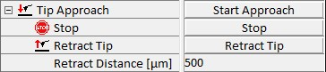

|
探针逼近
|
此序列器用于使用 alphaControl 进行 AFM 和 SNOM 测量的探针逼近。以下参数用于控制和执行探针逼近。
更多信息（操作指南）：

开始逼近
此按钮启动探针逼近程序。
如果出现以下问题之一，自动逼近可能会失败：
回缩距离 [µm]
此参数定义探针回缩时显微镜 Z 台的向上行程距离。
回缩探针
此按钮使用显微镜 Z 台按定义的回缩距离回缩探针。
非接触速度 [µm/s]
此参数定义达到反馈设点值之前逼近过程中显微镜 Z 台的速度（参见第 3.4.5 节）。
接触中速度 [µm/s]
此参数定义达到反馈设点值后逼近过程中显微镜 Z 台的速度（参见第 3.4.5 节）。由于扫描台（第 3.4.3 节）在 Z 方向完全伸出，显微镜 Z 台以接触中速度向下移动，同时反馈回路将扫描台回缩到其最终 Z 位置（见下文）。
最终位置 Z [µm]
此参数设置逼近完成时扫描台的 Z 位置。
逼近方法
探针逼近取决于所选的反馈设置。此功能允许为以下模式选择适当的逼近方法：
接触模式
在接触模式逼近过程中，一旦达到设点值，探针就与表面接触。此时悬臂梁弯曲，由设点值和悬臂梁的弹簧常数定义的力作用在探针和样品之间。此后，扫描台回缩到其中间位置，同时显微镜 Z 台同步补偿此运动，以保持悬臂梁的弯曲恒定。
AC 模式
在 AC 模式逼近过程中，悬臂梁在到达样品之前以定义的自由振幅振荡。当探针与样品接触时，此振幅被阻尼，一旦达到反馈定义的设点值，探针处于其指定位置。然而，由于长程力的作用，振幅阻尼可能在探针与样品物理接触之前开始。因此，AC 逼近过程中探针接触的指示是当设点值稍微降低时相移 φ 的变化。为了可靠地确定相移，在探针逼近过程中连续采样 φ。一旦达到最终 Z 位置，设点值进一步降低，并确定标准偏差 σ(φ)。如果 σ(φ) < σmax（φ 的最大偏差），设点值进一步降低，同时使用显微镜 Z 台校正最终 Z 位置。当标准偏差 σ(φ) ≥ σmax 时，探针逼近停止。
出于安全原因，如果当前设点值小于初始设点值的一半，AC 模式探针逼近也会停止。
PFM 模式
PFM 模式下的逼近类似于接触模式下的逼近，不同之处在于用于调节的信号不是 T-B 信号（即悬臂梁恒定弯曲的信号）。此处使用的信号是从 PFM 曲线确定的 Fmax 信号。这确保了悬臂梁上恒定的最大力。
仅当正确选择 Fmax 窗口时，PFM 模式下的逼近才会成功。
探针调节接触模式
在此模式下，Z 方向的探针定位由位于悬臂梁臂中的定位压电元件调节，而不是由扫描台的 Z 轴调节。因此，探针回缩到此压电元件的中间位置，而不是扫描台的中间位置。
PhiStdDevAccums
要计算标准偏差 σ(φ)，使用 φ 的 n 个样本。参数 PhiStdDevAccums 定义 φ 样本的数量 n。
Stop@PhiStdDev
此参数定义 AC 逼近停止的最大偏差 σmax。